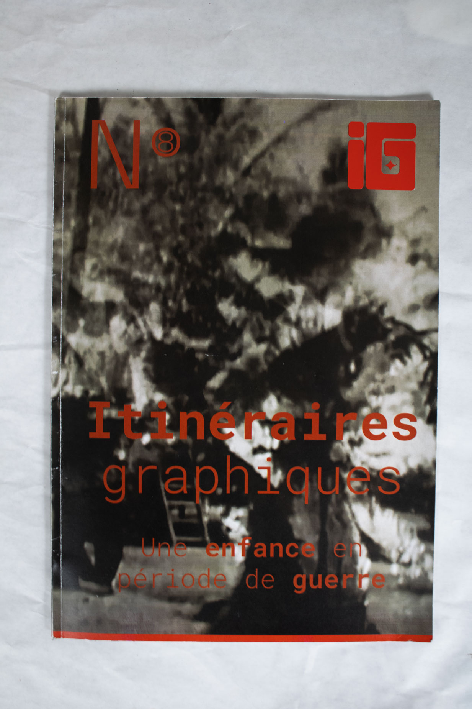
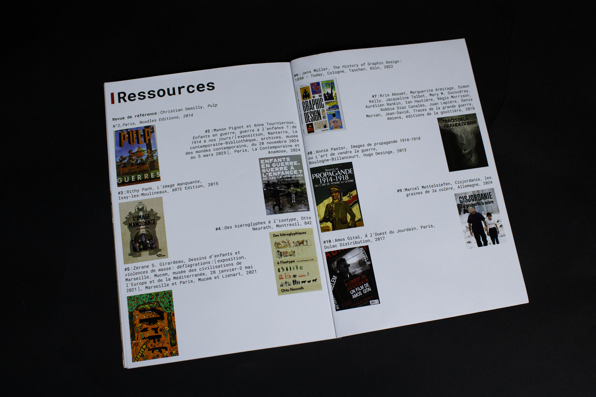
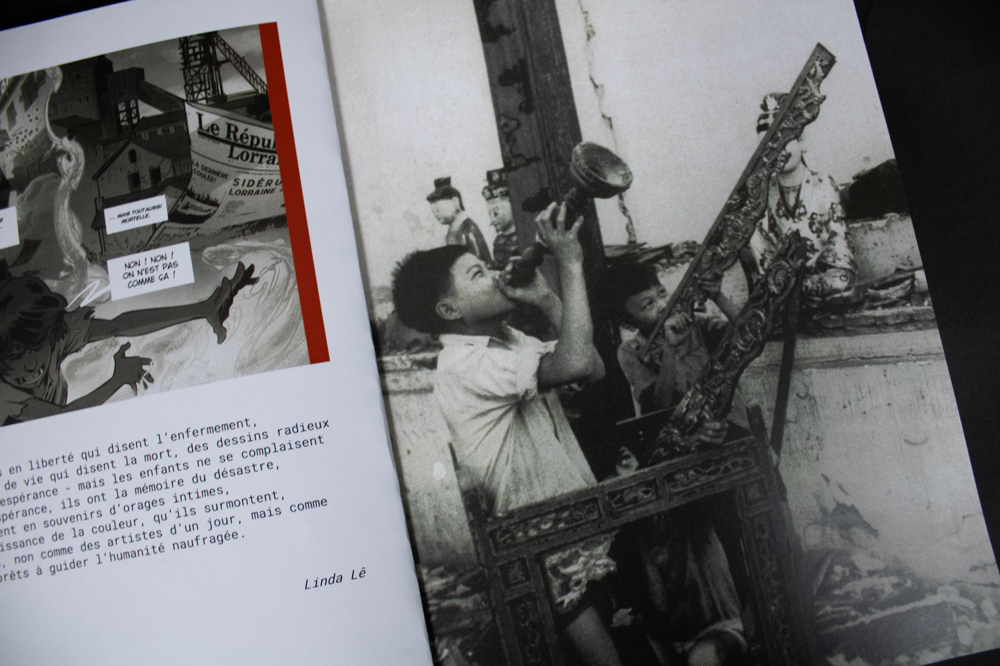
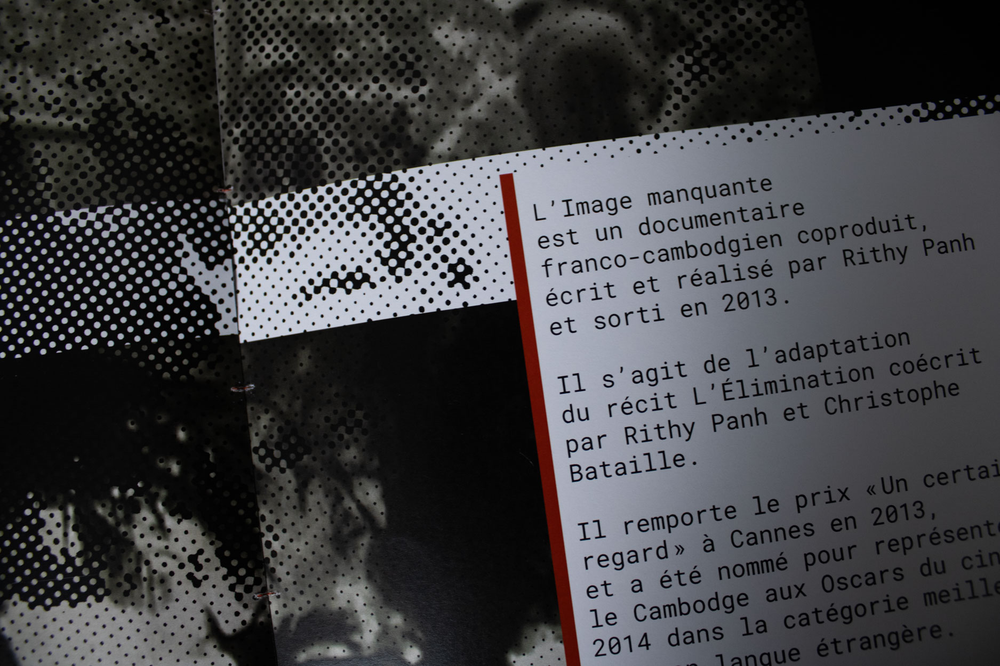
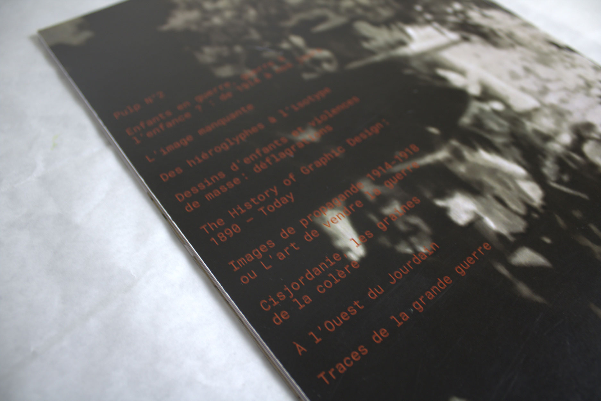
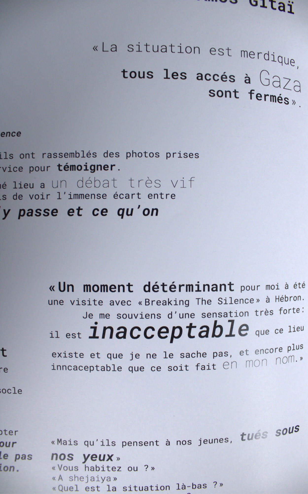
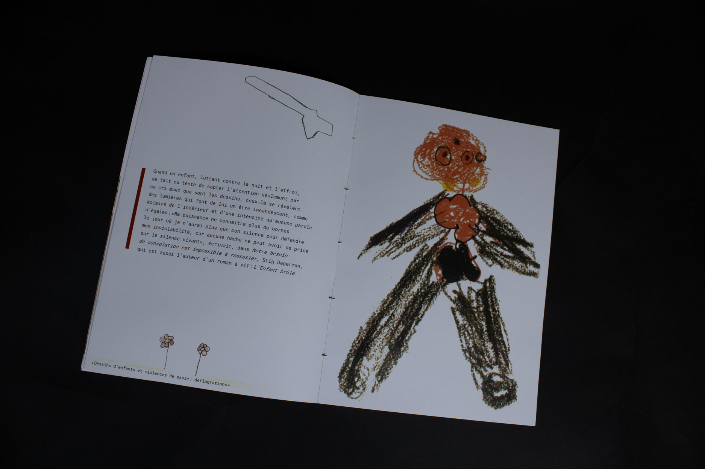
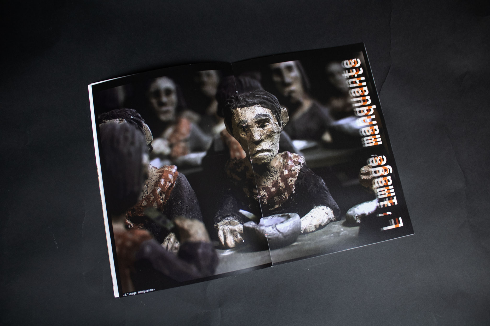
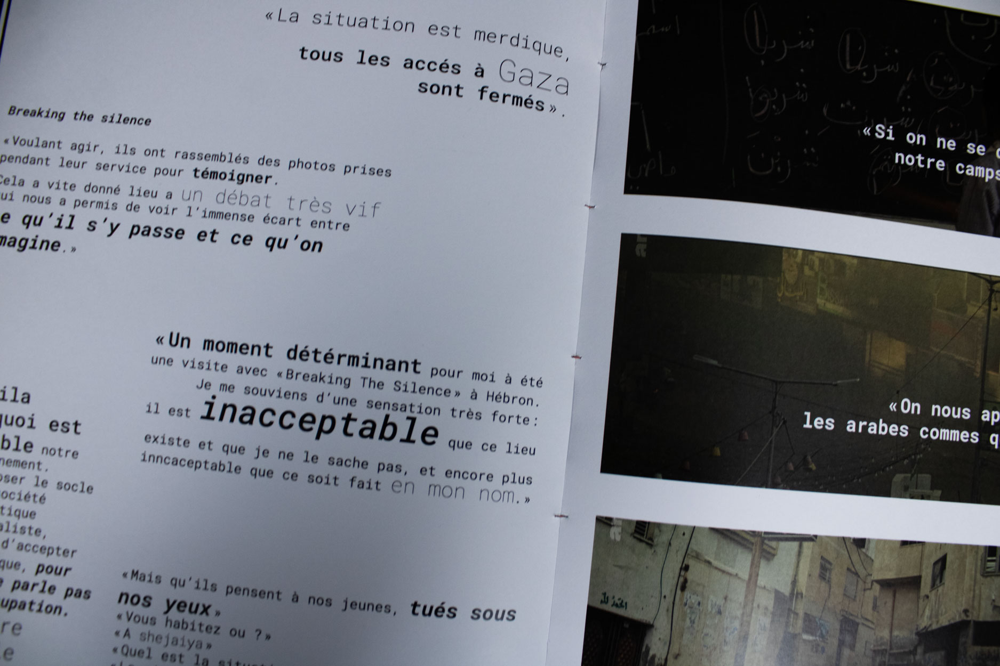

Ce magazine est un projet commun avec ma classe de DNA. L'objectif étant d'avoir choisi un thème, fourni par 10 livres de références afin d'en tirer des images et textes afin de les remettre en pages et obtenir ce magazine. La seule consigne était de respecter le titre qu'est "itinéraires graphiques", d'avoir un numéro unique et une pastille commune.
Pour ma part, j'ai choisi de travailler sur le lien entre la guerre et les enfants, et notamment les conséquences de vivre une enfance en période de conflit. On retrouve donc ce mélange de naïveté entre ce qui fait l'enfance, comme les dessins, et ce qu'ils représente. Ces choses représentées ne devraient pas croiser le chemin de l'enfance, ce qui est malheureusement le cas depuis toujours.







